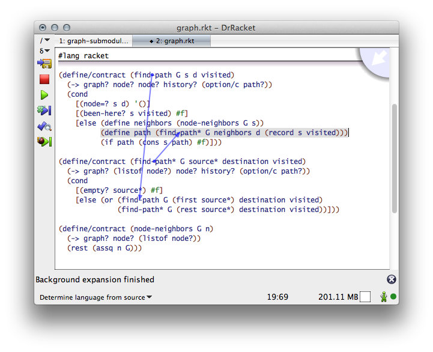

3 代码单元
3.1 组织事项
我们经常以自下而上的方式开发代码单元,并进行一些自上而下的规划。 这种策略并不令人惊讶,因为我们在现有的库之上构建代码,这需要一些实验,而这些实验又是在 REPL 中完成的。 我们也想快速获得可测试的代码,这意味着我们倾向于先写下那些我们可以开发和运行测试的代码片段。 然而,读者并不希望跟随我们的开发;他们希望了解代码的计算结果,而不一定了解所有的细节。
所以,请花时间以自上而下的方式介绍每个单元的代码。 这要从一个模块的实现部分开始。 把重要的功能放在靠近顶部的位置,就在任何代码和注释下面,说明你使用了什么样的数据。 这条规则也适用于类,在处理 private 方法之前,你要公开 public 方法。 这条规则也适用于单位。
3.2 大小问题
保持小的代码单元。保持模块、类、函数和方法的规模。
一个 10,000 行代码的模块太大。 1,000 行的模块是可以容忍的。一个 500 行代码的模块有合适的大小。
一个模块通常应该包含一个类和它的辅助函数,这反过来又决定了一个好大小的类的长度。
而一个函数/方法/语法案例大概有 66 行,通常是可以接受的。66 是基于一个小字体的屏幕的长度。 它真正的意思是 "一个屏幕的长度"。是的,也有例外,函数的长度超过 1000 行,而且可读性极高。 嵌套层次和嵌套循环在你写代码时可能看起来很好,但读者不会欣赏它把隐含的、纠结的依赖关系记在心里。 把函数(你可以称之为手动 lambda 解除)分离成一个合理的平面的单元组织,适合在(笔记本)屏幕上和明确的依赖关系,这确实有助于读者。
许多年来,我们有一个有限的语法转换语言,迫使人们创建 huge 的函数。 现在已经不是这样了,所以我们应该尽可能地坚持这个规则。
如果一个单元的代码看起来难以理解,那么它可能是太大了。把它分解开来。 为了让大家了解这些部分的计算、实现或服务内容,请使用有意义的名称;见 命名 。 如果你不能为这些部分想出一个好的名字,那么你可能是在看错误的划分;考虑替代方案。
3.3 模块和它们的接口
给模块配备一个简短的目的声明。
|
|
比起 (provide (all-defined-out)) ,更倾向于具体的输出规范。
测试套件部分–如果位于模块内–应该放在最后,包括其具体的依赖关系,即 require 规范。
3.3.1 Require
在实现部分的顶部有 require 规范,你可以让每个读者知道理解这个模块需要什么。
3.3.2 Provide
一个模块的接口描述了它所提供的服务;其主体实现了这些服务。如果外部文档不够用,其他人就必须阅读接口:
把接口放在模块的顶部。
|
|
从这个比较中你可以看到,一个接口不应该只是 provide 一个名字的列表。每个标识符都应该有一个目的说明。 数据的类型解释也可以出现在 provide 规范中,这样读者就能理解你的公共函数是对哪种数据工作的。
虽然一个函数的一行目的声明通常就足够了,但语法应该附带它所引入的语法条款的描述 和 它的含义。
|
对于模块接口,使用 provide 与 contract-out 。契约通常为第一次阅读的人提供了正确的规范水平。
至少,你应该使用类似类型的契约,即检查数据构造器的谓词。 它们几乎不花钱,特别是因为导出的函数无论如何都倾向于在内部检查这种约束,而契约往往使这种检查变得多余。
如果你发现契约造成了性能瓶颈,请将问题报告给 Racket 开发者邮件列表。
3.3.3 界面的统一性
选择一个规则来统一命名你的函数、类和方法。严格遵守它。 例如,你可能希望在所有导出的名称前加上它们所处理的数据类型的名称,例如 syntax-local 。
为你的函数和方法的参数选择一个统一的命名和排序规则。严格遵守。 例如,如果你的模块实现了一个抽象数据类型(ADT),那么 ADT 上的所有函数应该首先或最后消耗 ADT 参数。
最后,为一个模块中所有引用同类数据的函数/方法参数选择相同的名称–无论该模块是否实现了一个共同的数据结构。例如,在 "pkgs/racket-index/setup/scribble.rkt" 中, 所有的函数都使用 latex-dest 来指代同一种数据,即使那些没有被导出的数据。
3.3.4 节和子模块
最后,一个模块由多个部分组成。好的做法是用注释线来分隔各部分。 你可能想写下各部分的目的声明,这样读者可以很容易地理解模块的哪一部分实现了哪项服务。 另外,也可以考虑使用 DrRacket 中的大字标题来标记模块的各个部分。
使用 rackunit,可以用 define/provide-test-suite 在模块中定义测试套件。 如果你这样做了,将测试部分定位在模块的末尾,并为测试套件专门 require 必要的测试件。
从 5.3 版本开始,Racket 支持子模块。 使用子模块来制定部分,特别是测试部分。 有了子模块,现在可以把各部分分成不同的部分(用相同的名字标注),让语言把各部分缝合起来。
|
$ raco test fahrenheit.rkt |
3.4 类和单元
(我迟早会在这里写一些东西。)
3.5 功能和方法
如果你的函数或方法消耗两个以上的参数,请考虑关键字参数,以便调用站点可以很容易地被理解。 此外,关键字参数还可以 "减弱" 调用,因为函数调用不需要引用被认为是可选的参数的默认值。
同样,如果你的函数或方法消耗两个(或更多) optional 参数,那么关键词参数是必须的。
为你的函数写一个目的声明。如果可以的话,添加一个非正式的类型和/或契约声明。
3.6 合约
契约在服务提供者和服务消费者(又称 server 和 client )之间建立了一个边界。 由于历史原因,我们倾向于把这个边界称为 module boundary, 但在这个短语中使用 "模块" 并 不 仅仅指基于文件或物理 Racket 模块。 显然, contract boundary 比模块边界更好,因为它把这两个概念分开了。
当你在模块层面上使用 provide 与 contract-out 时,物理模块的边界和合同边界是重合的。
module, 作为子模块。
使用第一个, define/contract, 就像使用 define 一样, 除了它也可以在定义的头和它的主体之间添加一个契约。 下面的代码显示了一个文件,它竖立了三个内部契约边界:两个用于普通常量,一个用于函数。
|
- 在文件的底部添加以下一行:
(celsius->fahrenheit -300)
保存到文件,观察合同系统如何责备这一行,以及责备报告告诉你什么。 - 将 celsius->fahrenheit 函数的主体替换为
(sqrt c)
再次运行该程序,研究合同的例外情况,特别是观察哪一方受到责备。 将 AbsoluteC 的右侧改为 0.0-273.15i,即一个复数。这一次,不同的合同方被指责了。

相比之下,当涉及到合同边界时,子模块的行为与普通模块完全一样。 像 define/contract 一样,一个子模块在它自己和模块的其他部分之间建立了一个契约边界。 客户端模块和子模块之间的任何价值流都受合同的约束。 子模块内部的任何价值流都不受任何约束。
|
由于模块和子模块不能以相互递归的方式相互引用,子模块的契约边界不能对相互递归的函数实施约束。 因此,不可能将前面的代码显示中的 find-path 和 find-path* 函数分配到两个不同的子模块中。